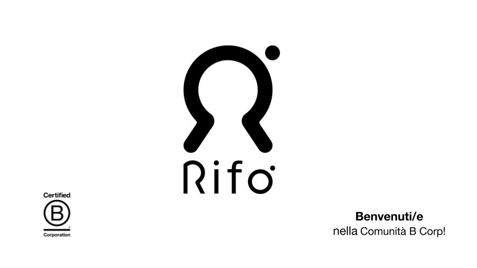

L'uso di vestiti con fibre riciclate offre vantaggi ecologici ed economici. Le fibre riciclate riducono l'impatto ambientale, evitando l'estrazione di nuove materie prime e diminuendo l'inquinamento atmosferico, la deforestazione e il consumo di energia. Inoltre, riducono i rifiuti, promuovendo un'economia circolare e contribuendo a un minore dispendio energetico nella produzione. Questi vestiti spesso costano meno, grazie a una produzione con minor impiego di energia e alla disponibilità di materiali a costo inferiore.
Non solo offrono qualità e prestazioni paragonabili ai materiali tradizionali, ma sono anche associati a una responsabilità ambientale, attirando consumatori consapevoli e favorendo la fiducia nel marchio. In breve, l'acquisto di vestiti con fibre riciclate è una scelta vantaggiosa sia per l'ambiente che per i consumatori, fornendo un'economia sostenibile, risparmio energetico e prodotti di alta qualità.
Ecco dove poter comprare vestiti con fibre riciclate:
Rifò è un brand emergente di abbigliamento e accessori. Rifò Lab raccoglie tessuti pre-consumo, come scarti di produzione e abiti usati, per creare nuovi capi di abbigliamento.
L'idea nasce da Niccolò Cipriani nel 2017 nella città di Prato grazie ad una campagna di crowdfunding. Il nome deriva da un'inflessione toscana del verbo rifare ispirandosi dunque alla rigenerazione di vecchi indumenti per produrre un nuovo filato.